Zennの「frontend」のフィード
フィード
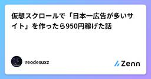
仮想スクロールで「日本一広告が多いサイト」を作ったら950円稼げた話
Zennの「frontend」のフィード
はじめにどうも、reodesuxzです。「広告が多すぎるサイトって、どこまで作れるんだろう。」そんな、本当にただの思いつきから開発を始めました。結果として完成したのがこちらです。日本一（たぶん世界一）広告が多いサイトhttps://ad-japan-first.pages.dev/今のところ、このサイトだけで 950円 ほど収益が発生しています。 何を作ったのかSNSではよく「世界一〇〇」「日本一〇〇」というネタを見かけます。だったら、「広告が一番多いサイト」も作れそうじゃないか。そんなノリで始まりました。100万個の広告を並べたサイトを作る —— それだけです。...
9時間前
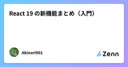
React 19 の新機能まとめ（入門）
Zennの「frontend」のフィード
React 19 の新機能まとめ（入門） 概要React 19 は、非同期処理まわりの定型コードを大幅に減らすことを狙ったメジャーリリースです。これまで useState と useEffect を組み合わせて手書きしていた「ローディング中」「エラー表示」「楽観的更新」といったパターンが、useTransition / useActionState / useOptimistic / use といった新しいプリミティブで整理されました。この記事は、React 19 で入った主な新機能を「何が嬉しいのか」に絞って入門者向けに整理したものです。API は将来変わる可能性があるため...
14時間前
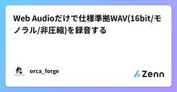
Web Audioだけで仕様準拠WAV(16bit/モノラル/非圧縮)を録音する
Zennの「frontend」のフィード
📝 この記事は forge.workstyle.tech に掲載した記事の転載です。ブラウザでマイク録音、と言われて最初に思いつくのは MediaRecorder でしょう。数行で録音できて手軽です。ところが録音した音声を機械学習の前処理に回す——声質変換や特徴抽出のような用途になると、MediaRecorder は途端に不都合になります。MediaRecorder が出力するのはたいてい webm/opus、つまり非可逆圧縮です。人間の耳には十分でも、前処理の前段で微細な声質情報がすでに削られている。「クリーンな原音」が欲しい場面で、入口で劣化させてしまうわけです。しかも下流の...
14時間前
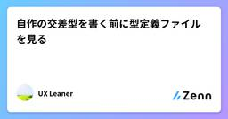
自作の交差型を書く前に型定義ファイルを見る
Zennの「frontend」のフィード
この記事の要点ライブラリが実行時に DOM 要素へぶら下げるプロパティを TypeScript から触るとき、こういう型を自作しがちです。(closeButton as HTMLButtonElement & { _tippy?: Instance })._tippy?.setContent(tooltipText);多くのライブラリは、この用途の型を最初から公開しています。tippy.js なら ReferenceElement です。(closeButton as ReferenceElement)._tippy?.setContent(tooltipText);...
1日前
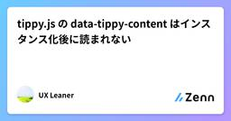
tippy.js の data-tippy-content はインスタンス化後に読まれない
Zennの「frontend」のフィード
この記事の要点tippy.js でツールチップの文言を JavaScript から切り替えるとき、data-tippy-content を書き換えても表示は変わりません。tippy が data 属性を読むのはインスタンス化の瞬間だけで、その後は読み直さないためです(再度インスタンス化されればまた読まれます。後述)。closeButton.setAttribute('data-tippy-content', tooltipText); // 表示には効かないcloseButton._tippy?.setContent(tooltipText); ...
1日前
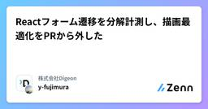
Reactフォーム遷移を分解計測し、描画最適化をPRから外した
Zennの「frontend」のフィード
はじめに「次へ」を押してから画面が切り替わるまでが重い。そんな報告が、ある業務フォームで上がりました。入力項目の多い、React製の長いフォームです。最初に疑ったのは再レンダリングでした。フォーム値の監視範囲を狭める。画面外にある要素の描画を遅らせる。コードを見る限り、どちらも試す理由があります。ただ、実装上もっともらしいことと、いま目の前にある待ち時間へ効くことは別です。クリック後を分けて測ると、描画より先に、同じ入力に対する重複チェックを待ち直している経路が見つかりました。一方、描画側の変更では一貫した差を確認できませんでした。この検証は過去の改修時に行ったものです。以下...
1日前
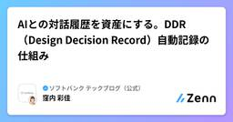
AIとの対話履歴を資産にする。DDR（Design Decision Record）自動記録の仕組み
Zennの「frontend」のフィード
はじめにこんにちは！ソフトバンク社内のデザインチームに所属しているデザイナーの窪内です。私たちのチームでは、デザインプロセスにAIを活用し、AIチャットやAIコーディングツールを使ってデザインをする機会が増えています。この記事を読んでくださっている方の中にも、AIとの対話の中で提案や修正指示をしながらデザインされている方がいらっしゃると思います。しかし、最終的なデザインだけが残り、「なぜそのような修正をしたのか、なぜその案を採用したのか、どの案を検討して見送ったのか」といった「意思決定」が後からたどれない、といったことはないでしょうか。私たちのチーム内でも、あるプロダクトの...
2日前
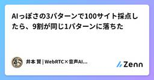
AIっぽさの3パターンで100サイト採点したら、9割が同じ1パターンに落ちた
Zennの「frontend」のフィード
私の敗北：10要因説を捨てた日私はAIっぽさを10要因で説明できると思っていました。100サイトを3パターン（紫グラデ / 幾何学浮遊 / Inter直立）で採点したら、92サイトが最初の「紫グラデ」に落ちたのです。10要因はもう要りませんでした。以前の私は、フォント・配色・余白・角丸・シャドウ・グリッド・アイコン・グラデ・レイアウト・マイクロインタラクションの10項目でチェックリストを組んでいました。1サイトあたり2〜3分の判定に耐えられる、精緻な採点表を作ったつもりだったのです。ところが実データにぶつけた瞬間、この設計は崩れました。ほとんどのサイトが3つのパターンのどれかに...
2日前
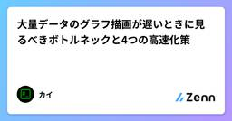
大量データのグラフ描画が遅いときに見るべきボトルネックと4つの高速化策
Zennの「frontend」のフィード
はじめにデータベースに溜まった大量のデータをグラフで可視化する機能を作ると、データ件数が増えるにつれて描画が遅くなり、ページが固まったように感じることがあります。今回は、この「大量データのグラフ描画が遅い」という問題に対して、どのような高速化方法があるのかを調査したので整理します。この記事を読み終えると、大量データのグラフ描画が遅いときに「どこがボトルネックになっているのか」を見極め、代表的な高速化方法の中から自分のケースに合ったものを選べるようになります。 記事で扱うこと大量データのグラフ描画が遅くなる原因高速化する代表的な4つの方法各方法の比較まとめ 記事...
2日前
URLエンコードのencodeURIComponentとencodeURIを使い分ける — 残る記号・空白と+の罠・UTF-8パーセント
Zennの「frontend」のフィード
3行まとめURLをパーセントエンコード/デコードするブラウザ完結ツールを作った。中身は標準の encodeURIComponent / encodeURI そのままだが、この2つの使い分けが本題encodeURIComponent はクエリの「値」用、encodeURI はURL「全体」用。前者は / ? & = まで変換し、後者は残す。ただし encodeURIComponent でも ! ~ * ' ( ) は変換されない空白は %20 になり + にはならない。フォーム（application/x-www-form-urlencoded）で + が要るなら自...
2日前
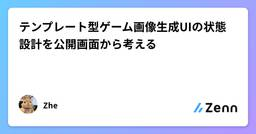
テンプレート型ゲーム画像生成UIの状態設計を公開画面から考える
Zennの「frontend」のフィード
テンプレート型ゲーム画像生成UIの状態設計を公開画面から考えるこの記事は公開ページの文言から、テンプレート選択、素材入力、生成、レビュー、書き出しを状態として整理する設計メモです。ソースコード、内部API、実装フレームワーク、性能値を確認したものではありません。以下の図と型は観察結果ではなく提案です。テンプレートを背景画像として扱わない公開されている Minecraft thumbnail ページには、Hardcore 100 Days、PVP、Redstone、Survivalなどのテーマと、文字、スキン、モブ、環境を指定する流れが示されています。テンプレートを単なる画像URL...
2日前
React 19 の新機能まとめ（入門）
Zennの「frontend」のフィード
React 19 の新機能まとめ（入門） 概要React 19 は 2024 年 12 月に安定版がリリースされたメジャーバージョンです。フォーム処理まわりを大きく変える「Actions」、非同期処理をシンプルに扱う use API、forwardRef を不要にする ref の扱いの変更など、日々の実装に効く変更が多く入っています。この記事では「まず何が変わったのか」を入門者向けに整理します。個別 API の細かい仕様は公式ドキュメントに譲り、全体像をつかむことを目的にします。 環境React 19（安定版）記載のコードは概念を示すための最小例です 主な新機...
2日前
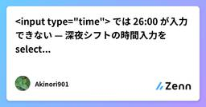
<input type="time"> では 26:00 が入力できない — 深夜シフトの時間入力を select 化で乗り越えた話
Zennの「frontend」のフィード
概要飲食・バーなど深夜業態向けのシフト管理システムを作っていると、避けて通れないのが「日跨ぎの時刻」です。たとえば「22:00 出勤・翌 02:00 退勤」のシフト。この業界では翌 02:00 を 26:00 と表記するのが慣習で、システム側もそれに合わせて時刻を扱う必要があります。ところが、時間入力に何気なく <input type="time"> を使っていると、この 26:00 が どうやっても入力できない という壁にぶつかります。この記事では、なぜ <input type="time"> では 24:00 以降が入力できないのか、そしてそれを 3...
2日前
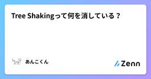
Tree Shakingって何を消している？ 1
1
Zennの「frontend」のフィード
JavaScriptのバンドルサイズを小さくする方法として、Tree Shakingという言葉をよく見かけます。説明するときは「使っていない関数を消す仕組み」と言われがちです。たしかに、次のmultiply()をimportしなければ、本番用の出力から消えることがあります。math.jsexport function add(a, b) { return a + b;}export function multiply(a, b) { return a * b;}しかし、実際には関数だけを探して消しているわけではありません。ファイル単位とも限りません。使っていな...
3日前
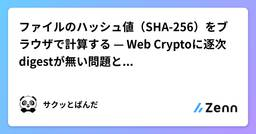
ファイルのハッシュ値（SHA-256）をブラウザで計算する — Web Cryptoに逐次digestが無い問題とMD5非対応 1
Zennの「frontend」のフィード
3行まとめダウンロードしたファイルの改ざん・破損チェック用に、SHA-1/256/512 のハッシュ値をブラウザ内で計算するツールを作った。crypto.subtle.digest だけで実装できるWeb Crypto の digest は ファイル全体を1つの ArrayBuffer で渡す一括APIで、逐次（ストリーミング）更新のインターフェースが無い。Node の createHash().update() のようにチャンクを流し込めない。これが扱えるファイルサイズの上限を決めるMD5 はブラウザ標準のWeb Cryptoに存在しない（意図的に非サポート）。SHA-1...
3日前
Web基礎 完全読本 — ビジネス職・Web初心者のためのHTML & CSS
Zennの「frontend」のフィード
エンジニアではないけれど Web に関わる人のための、HTML & CSS 入門書。ブラウザとサーバーの仕組みから、HTML/CSS の読み書き、レスポンシブ、実務での立ち回り、表示崩れの切り分けまでを全12章＋付録で体系的に解説します。各章末に確認問題つき。教材一式（スライド・チートシート・クイズ）は https://github.com/techub-organization/webasics で公開しています。
3日前
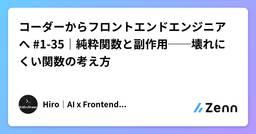
コーダーからフロントエンドエンジニアへ #1-35｜純粋関数と副作用──壊れにくい関数の考え方
Zennの「frontend」のフィード
はじめに前回（#1-34）は「早期リターン」で、関数の読みやすさを整えました。今回のテーマは壊れにくさです。コードを書いていて、こんな経験はないでしょうか。さっきまで正しく動いていた関数が、別の場所を触った途端おかしくなった同じ関数を呼んでいるのに、タイミングによって結果が違うどこでデータが書き換わったのか追えないこうしたバグの多くは、たった1つの原因にたどり着きます。その関数が、外の世界とこっそりつながっていたことです。この「つながり」を意識して切り離す考え方が、今回学ぶ**純粋関数（じゅんすいかんすう）**です。関数型プログラミングという分野の用語ですが、難しい...
4日前
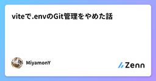
viteで.envのGit管理をやめた話
Zennの「frontend」のフィード
Viteで構築したフロントエンドにおいて、.env ファイルの直接管理やGitへのコミットをやめ、AWS Parameter Store と GitHub Actions へ移行した 以前の構成と課題以前の運用 .env, .env.staging,.env.production で各環境の変数を管理し、これらのファイルをGitにコミットして管理していた 抱えていた課題セキュリティ: 設定値の漏洩リスク 移行後の構成ローカル開発環境と本番・検証環境で取得元を切り離した ローカル開発（.env）pnpm dev 実行時にスクリプトを挟み、AWS Paramet...
4日前
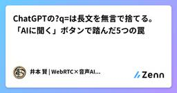
ChatGPTの?q=は長文を無言で捨てる。「AIに聞く」ボタンで踏んだ5つの罠
Zennの「frontend」のフィード
動いたと思っていたら、入力欄が空でした自分のサイトに「ChatGPTで開く」「Claudeで開く」というボタンを付けました。押すと、そのAIとの新しい会話が、こちらが用意したプロンプト入りで開く。読者が自分の課題に合う記事をAIに選んでもらうための導線です。実物は kenimoto.dev の記事一覧 の下にあります。きっかけは @marikkadayo さんのポスト でした。普段使ってるAIに相談できる機能つけたらAI経由の流入増えていい感じ仕組み自体は単純です。プロンプトをURLエンコードして ?q= に載せるだけ。ヘッドレスブラウザで叩いたら3社ともページに到達...
4日前
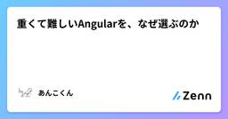
重くて難しいAngularを、なぜ選ぶのか
Zennの「frontend」のフィード
このフレームワークの話をすると、だいたい二つの反応が返ってきます。「重い」「難しい」。どちらも間違っていません。覚えることは多いし、小さな画面を作るだけなら大げさに見えます。プロジェクトが育てば、ビルドやテストの待ち時間も無視できなくなります。それでも、私はAngularを選ぶ理由があります。コードを最短で書けるからでも、どんな用途にも合うからでもありません。Angularは、開発の初期にコストを払い、その後の迷いを減らすフレームワークです。特に効くのは、複数人で一つのアプリケーションを長く育てる場面です。この記事ではAngular 22を前提に、私が感じている良さと、その裏側...
4日前